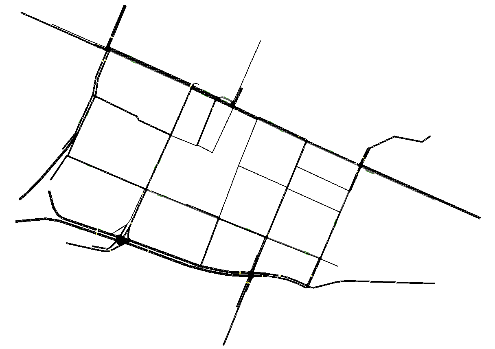

URBANEVO: ottimizzazione dei segnali semaforici tramite algoritmi di AI
Algoritmo
- L'algoritmo di URBANEVO combina
tecniche di clustering, machine learning regularization e algoritmi genetici per individuare
e ottimizzare i differenti flussi di traffico.
- Lo scopo dell'algoritmo è quello di ottimizzare gli schemi dei segnali semaforici per diminuire:
- tempi di percorrenza
- emissioni inquinanti dei veicoli
Testing
- L'algoritmo è stato testato tramite il simulatore di traffico SUMO sui dati del traffico reale, del quartiere di Bologna via Pasubio, durante le ore di traffico intenso mattutino.

Risultati - Tempi di percorrenza
| Metrica |
Originale |
Ottimizzato |
Miglioramento |
| Durata (s) |
907.85 |
573.08 |
-36.87% |
| Attesa (s) |
647.71 |
368.01 |
-43.18% |
| Fermate |
12.38 |
7.24 |
-41.50% |
| Arrivati |
7252 |
8556 |
17.98% |
Arrivati: si riferisce al numero di veicoli arrivati a destinazione durante la simulazione.
Risultati - Emissioni
| Metrica |
Originale |
Ottimizzato |
Miglioramento |
| CO (mg) |
6831.68 |
5153.55 |
-24.56% |
| CO2 (mg) |
692650.37 |
541404.16 |
-21.83% |
| HC (mg) |
336.60 |
237.04 |
-29.57% |
| PMx (mg) |
51.99 |
45.28 |
-12.89% |
| NOx (mg) |
1605.10 |
1386.12 |
-13.64% |
| Carburante (ml) |
276.14 |
215.84 |
-21.83% |
Realizzazione di Urbanevo
I costi per realizzare URBANEVO su uno scenario reale di 8 incroci semaforici, simile a quello di Bologna via Pasubio, variano in base alla disponibilità e alla qualità dei dati sul traffico già presenti.
Scenario 1 - Budget
Descrizione: né dati sul traffico né sensori per raccolta informazioni.
Costi totali di 27.000 euro, suddivisi in:
- Server: 1000 euro per la potenza di calcolo necessaria.
- Sensori: 17.000 per telecamere Wisenet XNO-6120RD/TD che raccolgono dati sul traffico.
- Installazione sensori: 2000 euro.
- Personale: 4000 euro per aggregazione dati.
- Costi accessori: 3000 euro.
Scenario 1 - Tempistiche
Si prevede una durata complessiva di 3 mesi. Suddivisi in:
- Primo mese: raccolta dati.
- Secondo mese: aggregazione dati e creazione ambiente di simulazione.
- Terzo mese: ottimizzazione algoritmica dei segnali semaforici.
Scenario 2 - Budget
Descrizione: disponibilità completa di dati sul traffico e sensori per raccolta informazioni.
Costi totali di 6000 euro, suddivisi in:
- Server: 1000 euro per la potenza di calcolo necessaria.
- Personale: 4000 euro per aggregazione dati.
- Costi accessori: 1000 euro.
Scenario 2 - Tempistiche
Si prevede una durata complessiva di 2 mesi:
- Primo mese: aggregazione dati e creazione ambiente di simulazione.
- Secondo mese: ottimizzazione algoritmica dei segnali semaforici.
Scenario ibrido - Budget
Descrizione: disponibilità di alcuni dati sul traffico e sensori per raccolta informazioni.
Costi totali di 17.500 euro, suddivisi in:
- Server: 1000 euro per la potenza di calcolo necessaria.
- Sensori: 8500 per telecamere Wisenet XNO-6120RD/TD che raccolgono dati sul traffico.
- Installazione sensori: 1000 euro.
- Personale: 4000 euro per aggregazione dati.
- Costi accessori: 3000 euro.
Scenario ibrido - Tempistiche
Si prevede una durata complessiva di 3 mesi in quanto la presenza dei dati è incompleta:
- Primo mese: raccolta dati mancanti.
- Secondo mese: aggregazione dati e creazione ambiente di simulazione.
- Terzo mese: ottimizzazione algoritmica dei segnali semaforici.
Conclusioni
Le conseguenze di urbanevo si possono suddividere in:
- Conseguenze dirette:
- Diminuzione fase accelerazione.
- Diminuzione delle fermate.
- Diminuzione tempi di percorrenza.
- Conseguenze indirette:
- Riduzione del traffico.
- Maggior sicurezza stradale.
- Riduzione NEE → emissioni non di scarico.
- Riduzione EE → emissioni di scarico.